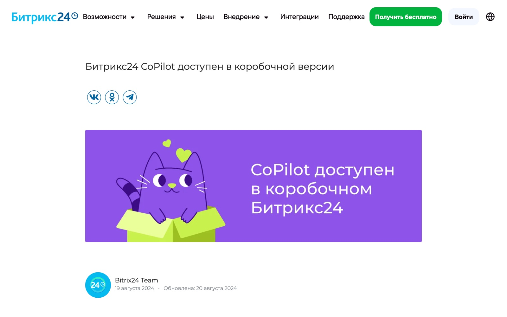
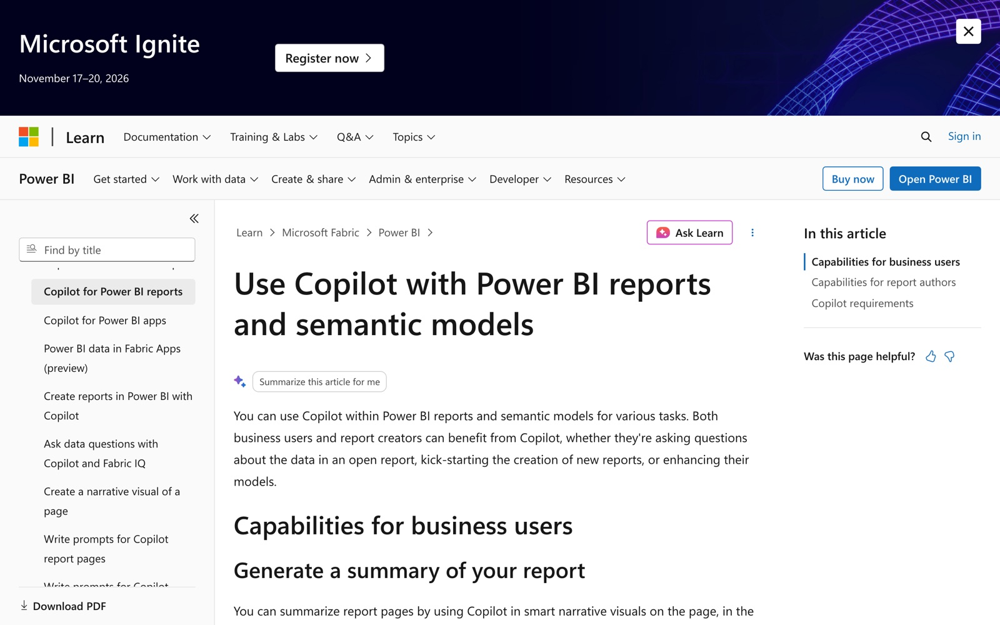

Тестовое задание
Система управления с ИИ для «Натурпласта»
Автор: Луна Kuzniatsova · Telegram @flowlabdev · flowlab-dev.github.io
1. Два ориентира
Оба ориентира я разбирала по демонстрации продукта и публичной документации. Личного опыта работы с этими системами и внедрений в компаниях у меня нет. Выводы ниже опираются на описание производителя и на то, как я сама собираю похожие связки на Python, n8n и LLM.
А. CoPilot в Битрикс24
Битрикс24 у вас уже есть, это самый близкий ориентир.
Что делает. CoPilot встроен в ленту, задачи, почту, CRM, конструктор сайтов и чат с ассистентом. В задачах составляет чек-листы и распределяет их между сотрудниками и отделами. В почте пересказывает суть переписки, готовит черновик письма и переводит. В чате работает ассистент с выбором роли. В CRM заявлены расшифровка записей звонков, выделение главного и заполнение полей карточки. На дату статьи эта функция была только анонсирована, ее статус нужно сверить с текущей документацией.
Роль ИИ. Берет на себя рутину с текстами и задачами.
Что перенять. ИИ работает внутри системы, где сотрудники уже ведут дела. Задача создается прямо из контекста, из звонка или письма.
Ограничения. Это помощник по текстам и рутине, а не аналитика продаж и прибыли. Данные Wildberries, Ozon и 1С он сам не видит. На странице нет тарифов, лимитов, прав доступа и требования, чтобы результат проверял человек.
Источник, статья от 19.08.2024: bitrix24.ru/blogs/bitriks24-copilot-dostupen-v-korobochnoy-versii.php

Б. Copilot в Power BI
Что делает. Пересказывает страницу отчета короткой сводкой. Отвечает простым языком на вопросы по данным отчета и модели данных и показывает визуал, из которого взят ответ. Если готового графика нет, строит его по модели данных. Сводку можно вложить в письмо-рассылку отчета. Автору отчета помогает собрать страницу, написать запрос DAX и описать показатели.
Роль ИИ. Объясняет данные и помогает их найти. Решений не принимает.
Что перенять. Вопрос к данным обычными словами, ответ с указанием источника, сводка в рассылке для руководителя.
Ограничения. Нужен подготовленный источник данных, то есть модель, и качество ответа зависит от нее. Если вопрос не про данные, Copilot может ответить из общих знаний модели. Нужны лицензия и емкость Microsoft, условия описаны на странице требований. Задач и согласований он не создает.
Источник, документация от 26.05.2026: learn.microsoft.com/en-us/power-bi/create-reports/copilot-reports-overview

2. Мой вариант для «Натурпласта»
Ниже проект решения. Он опирается на то, что я умею делать: Python и TypeScript, API и интеграции, LLM и агенты (OpenAI, Claude, RAG), Supabase и базы данных, Google Таблицы, n8n и Make, Битрикс24 как облачный сервис.
Что берем готовым и что связываем
Готовыми берем Битрикс24 с CoPilot для задач, звонков и почты, отчеты Wildberries и Ozon через их API или личные кабинеты, 1С как источник себестоимости и остатков. На пилоте хранилищем служат Supabase или Google Таблицы. Панель показателей строим на готовом BI-инструменте, ассистента на LLM с RAG подключаем к тем же данным.
Связать нужно сами источники. Каждый день данные из WB, Ozon, 1С и Битрикс24 загружаются в одно хранилище. После загрузки идет проверка: итог сверяется с выручкой, ошибки загрузки пишутся в журнал. С 1С в боевом проекте я не работала: подключение к ней возможно через стандартный обмен или выгрузку, а схему подтвердит ваш специалист по 1С или вы.
Похожие части я показываю в демонстрационных работах, сделанных по собственной инициативе. Заявки попадают в таблицу: flowlab-dev.github.io/demo/leads-sheet/ru/
Разбор сбоя автоматизации: flowlab-dev.github.io/demo/automation-repair/ru/
Как пользуются системой
Руководитель утром получает короткую сводку: продажи, прибыль по товарам, расходы и отклонения. Вопрос можно задать обычными словами, ответ приходит с указанием источника. Так устроен мой демонстрационный помощник по документам: flowlab-dev.github.io/demo/policy-assistant/ru/
Сотрудники видят свои задачи в Битрикс24 и там же подтверждают выполнение. Отдельная программа им не нужна.
Сценарий: у товара падает маржа
- Проблема. На маркетплейсе растут расходы на рекламу товара, цена не меняется, маржа падает.
- Решение. Система находит отклонение, показывает числа и источник и предлагает варианты: снизить ставку рекламы, поднять цену или убрать товар из рекламы.
- Согласование. Руководитель выбирает вариант одной кнопкой или комментарием. ИИ сам ничего не меняет.
- Задача. В Битрикс24 создается задача менеджеру маркетплейса со сроком.
- Проверка. Через 7 дней система сравнивает маржу и сообщает руководителю, помогло ли решение.
Пилот на 4 недели
Берем один маркетплейс и от 20 до 50 товаров с самой большой выручкой.
- Неделя 1. Доступы, схема данных, справочник соответствия артикулов.
- Неделя 2. Загрузка и проверка данных.
- Неделя 3. Утренняя сводка и ассистент.
- Неделя 4. Сценарий с задачей в Битрикс24 и итоги.
Пилот удался, если сводка совпадает с отчетами 1С и маркетплейса, а руководитель пользуется ею каждый день.
Главный риск
Главный риск в данных. Артикулы одного товара в WB, Ozon и 1С разные, себестоимость и комиссии считаются по-разному. Без единого справочника товаров ИИ будет уверенно объяснять неверные числа. Справочник соответствия артикулов я делаю первым шагом. Каждый ответ системы идет с источником, решения принимает человек.
Вопросы к вам
- Какая версия 1С и кто ее ведет?
- Есть ли доступ по API к Wildberries и Ozon? Какие сервисы аналитики уже оплачены?
- Какой тариф Битрикс24 и включен ли CoPilot?
- Сколько у вас товаров и сотрудников?
- Кто принимает решения по ценам и рекламе?
- Какие данные нельзя выносить за пределы компании, должны ли они храниться в России?
- Какие бюджет и срок у проекта?
- Какие показатели руководитель смотрит сейчас?